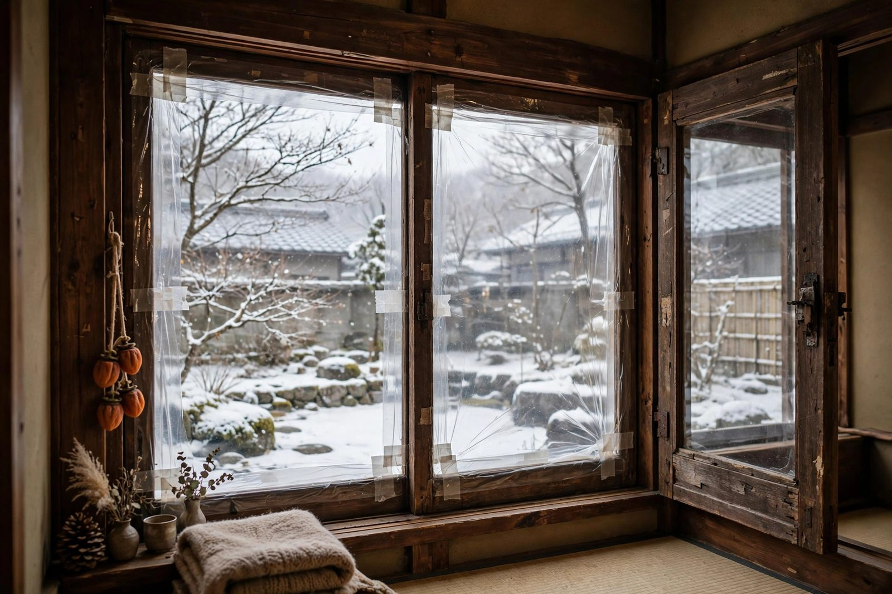
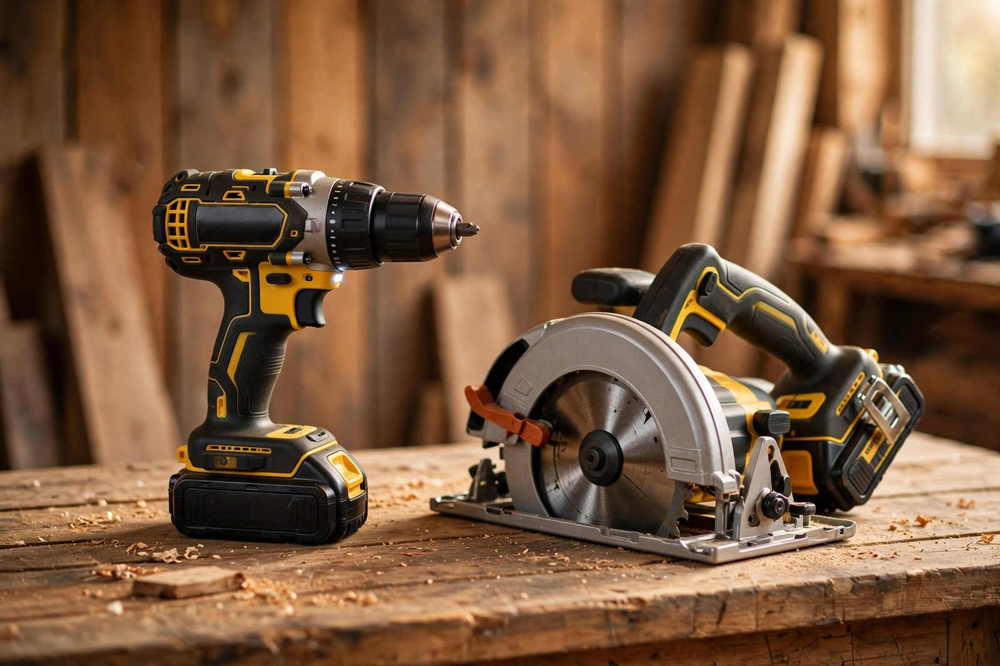

古民家は、道具しだいで暮らしやすくなる。
築年数の古い家に暮らしていると、直したい場所、工夫したい場所が次々に出てきます。このサイトでは、実際に自分の手で試したDIYの手順と、使ってよかった道具・材料を記録しています。買って失敗したものも含めて、正直に書くのがモットーです。
新着記事

DIY実践
古民家の台所の床をDIYで張り替えた話｜合板＋クッションフロアの手順と道具
傷んだ台所の床を、合板とクッションフロアで自分でリフォームした記録。手順と使った道具・材料をまとめました。

冬支度
古民家の寒さ対策、まず窓から｜1窓だけ試して分かったこと
寒さの原因は窓まわりが大半。1窓だけ試す段階的な対策と、基礎の通気口の扱いをまとめました。

道具レビュー
古民家暮らしで出番の多い電動工具、最初の一台はどれ？
出番の多い順に工具を整理。最初の一台にインパクトドライバーを勧める理由と、バッテリー統一の考え方。
暮らしの風景
※写真はイメージです
カテゴリ
DIY実践
床・壁・水回りなど、実際に手を動かした記録と手順。
道具レビュー
電動工具から手工具まで、使ってみた正直な感想。
農・庭まわり
畑と庭の手入れに使う道具と、季節の作業メモ。
冬支度
寒さ・雪への備え。古民家ならではの工夫を中心に。